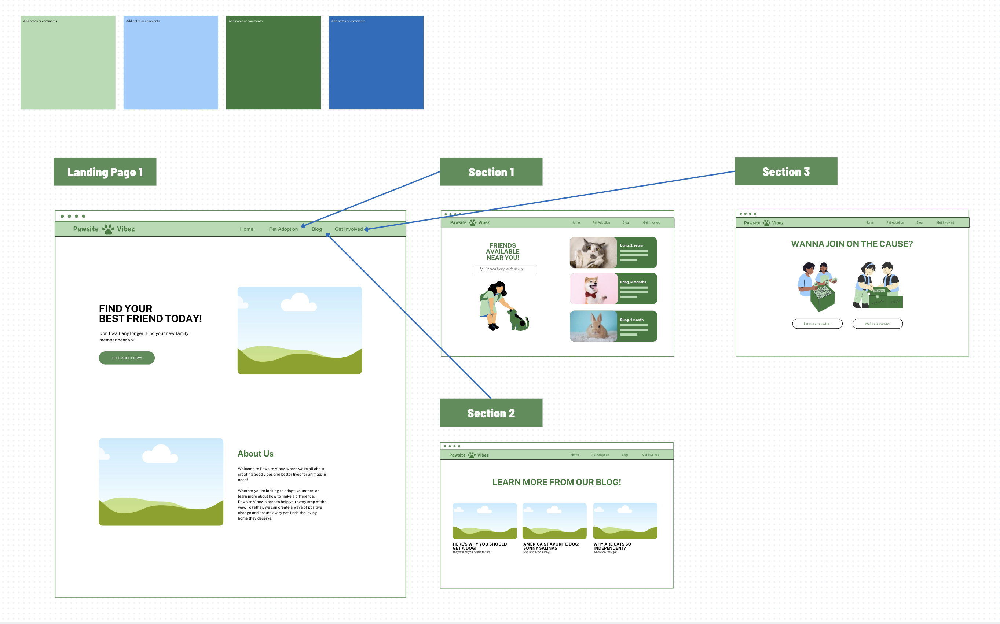
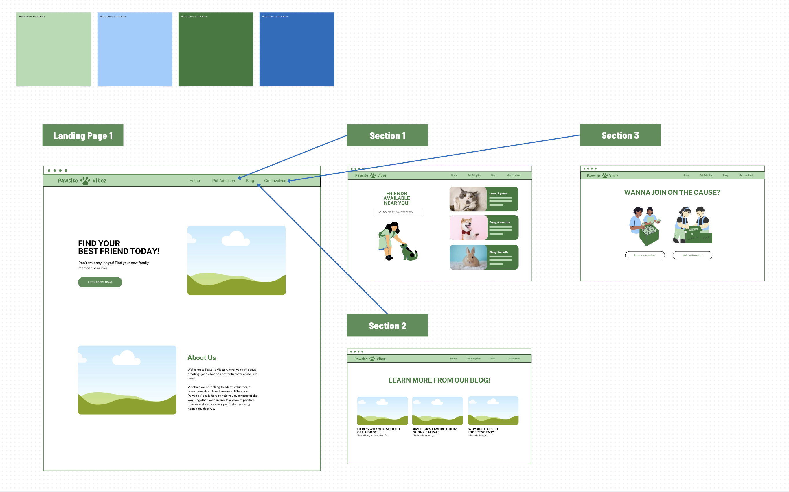

FRIENDLY FOOD
Mobile App
Tools Used: Figma, HTML, CSS, ReactJS, AI Integration
Problem & Solution
Social media makes it easy to discover recipes, but users struggle to organize, revisit, and share them. FriendlyFood centralizes saved food content, adds search and tagging, enables shared food boards, and facilitates collaboration between friends. Additionally, an AI feature allows users to copy a link from a reel or video online and automatically extract the recipe, making discovery effortless.
Research
Conducted multiple user interviews to uncover pain points and key needs for organizing and sharing food inspiration. Through iterative design and user testing, we identified key features that would streamline the recipe discovery and organization process.
PAWSITE VIBEZ
Website (click the title to check it out!)
Tools Used: Figma, Canva, HTML, CSS
Problem & Solution
Many shelter animals go unnoticed due to outdated systems and limited online presence. Pawsite Vibez aims to bridge this gap by creating a centralized, user-friendly platform for adoptions. The site connects potential pet parents with shelters, makes browsing pets simple, and provides resources to encourage volunteering and donations—all in one place.
 
